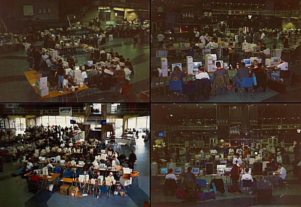

Here is the report of the party organized by the Nostalgia and Success groups and which took place the 4, 5 and 6 april 1997 at Eindhoven in Holland.
It seems the marking point was that one hour after the beginning of the party (about 8 p.m.) two groups of tables got out of power. In time the techniciens arrived, all the tables were out of power exept for one. And the organizers still wounder why ("Why on earth" sic ;-) that table was actually the one of the quite well known group Acme, which ended up winning the demo compo (which would probably would have happened anyway, the Statix&Vic combination has allready prooven itself ). But there is a compensation (a kind of) for the organizers: the group in question burned out 2 mother boards, 1 acquisition card, 1 MPEG compressor, 1 hard draive (plus the reformats) and one fully equiped PC. And all of it belonged to one and only one preson : Vic !
Full Results here.

[ >NEWS /
>PEOPLE /
>PARTIES /
>MISC /
>LINKS /
>FAQ /
>CREDITS ]